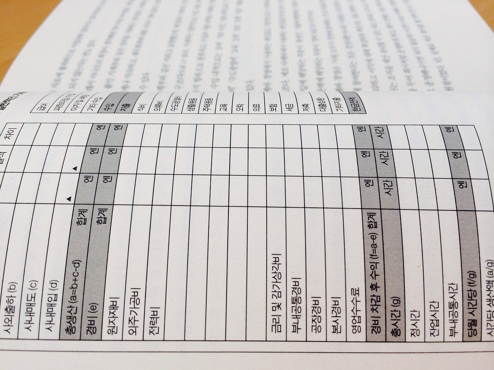

재무제표는 회사의 경영 성과와 건강한 재무 상태를 평가하는 데 중요한 도구입니다. 하지만 재무제표를 처음 접하는 분들에게는 이해하기 어려울 수 있습니다. 이 글에서는 회사 재무제표를 보는 데 도움이 되는 5가지 팁을 소개합니다.
1. 주요 재무제표 이해하기
회사의 재무제표에는 대표적으로 재무상태표, 손익계산서, 현금흐름표가 있습니다. 각각의 재무제표가 회사의 어떤 부분을 나타내는지 이해하는 것이 중요합니다. 재무상태표는 회사의 자산, 부채, 자본을 나타내며, 손익계산서는 회사의 수익과 비용을 보여줍니다. 현금흐름표는 영업, 투자, 재무 활동으로 인한 현금의 흐름을 보여줍니다.
2. 재무 비율 분석 활용하기
재무제표를 보는 데 중요한 도구 중 하나는 재무 비율입니다. 재무 비율은 회사의 성과를 다양한 측면에서 평가할 수 있도록 도와줍니다. 대표적인 재무 비율에는 유동비율, 부채비율, 매출액 증가율, 영업이익률 등이 있습니다. 이러한 비율을 계산하고, 업계 평균이나 경쟁사와 비교하여 회사의 성과를 평가할 수 있습니다.
3. 연간 및 분기별 추이 분석하기
회사의 재무제표를 분석할 때, 단기적인 성과뿐만 아니라 장기적인 추세도 고려해야 합니다. 연간 및 분기별 재무제표를 비교하여 회사의 성장률이나 변동성 등을 파악할 수 있습니다. 이를 통해 회사의 안정성과 성장 가능성을 평가할 수 있습니다.
4. 업계 특성과 경쟁사 비교하기
이건 제가 주식할 때도 항상 체크하는 부분인데, 회사의 재무제표를 분석할 때 업종별 특성과 경쟁사와의 비교가 중요합니다. 업종별로 성장률, 수익성, 위험성 등이 다르기 때문에, 같은 업종 내에서 경쟁사와의 비교를 통해 상대적인 위치를 파악할 수 있습니다. 경쟁사와의 비교를 통해 회사의 장점과 약점, 시장 점유율, 성장 가능성 등을 평가할 수 있습니다.
5. 향후 전망과 전략적 분석
재무제표를 분석하는 마지막 단계는 회사의 향후 전망과 전략적 가치를 평가하는 것입니다. 회사의 과거 성과뿐만 아니라 미래 성장 가능성과 안정성을 고려해야 합니다. 이를 위해 시장 동향, 기술 변화, 경쟁 환경 등 외부 요인을 함께 분석하고, 회사의 비전, 전략, 경영진의 역량 등 내부 요인을 고려하여 종합적인 평가를 진행할 수 있습니다.
결론적으로, 회사 재무제표 분석은 다양한 측면을 고려하여 진행해야 합니다. 이 글에서 소개한 5가지 팁을 활용하여 회사의 재무 상태를 정확하게 이해하고, 비교 분석을 통해 회사의 경쟁력과 성장 가능성을 평가할 수 있습니다. 이를 바탕으로 투자 결정을 내릴 수 있으며, 회사 경영진에게도 유용한 정보를 제공할 수 있습니다. 회사 재무제표 분석을 통해 건강한 경영과 지속 가능한 성장을 추구하는 기업을 찾아보세요.